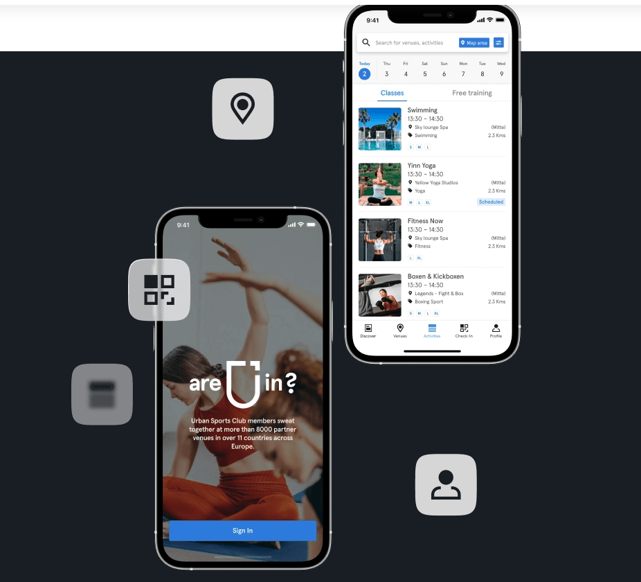
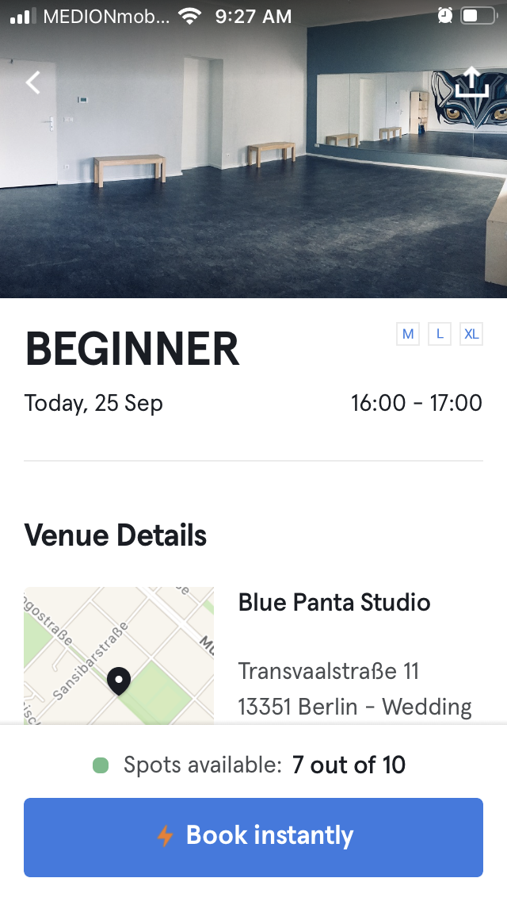
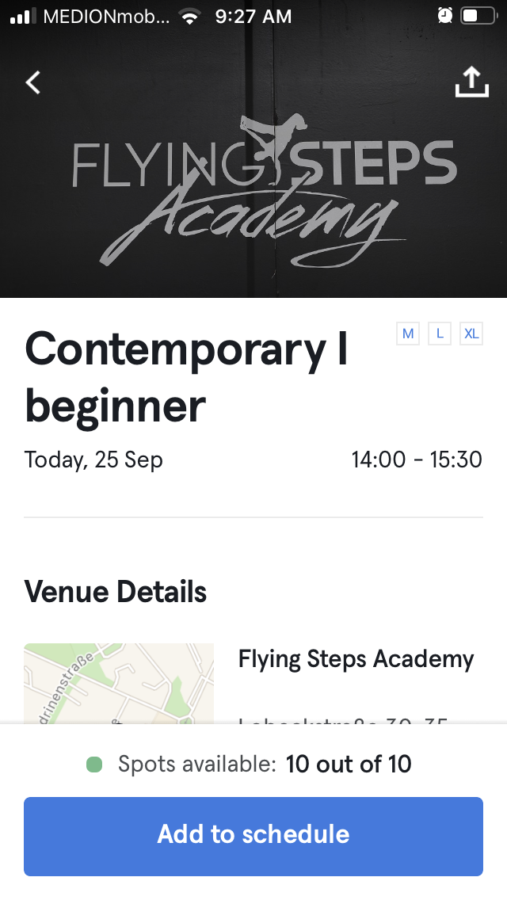
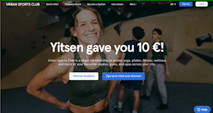

2歐元在歐洲上瑜珈、舞蹈課 - Urban Sport Club
剛來德國柏林的時候，想找像是台北東區街舞教室Dance soul，或者運動中心那種多樣運動課程，
發現一堂課大概要10-15歐，且有些場館還要另外加會員，每個場館報名或預約課程流程也不一樣，非常麻煩。
因緣際會下，認識了 Urban Sport Club (以下簡稱USC)，目前已使用半年，非常滿意，推薦給跟我有一樣需求的人：
- 喜歡不同類型舞蹈或運動課程
- 想要保持運動習慣
- 不要綁約
- 有英語授課
- 線上或線下課程
◊ 什麼是Urban Sport Club (USC)
一個數位平台（APP及網頁)，串連柏林上百家運動課程場館。
不綁約，可暫停，以每月訂閱方式，提供會員任意選擇課程。
目前提供德國、法國、西班牙等城市。
§ 方案介紹
分為S, M, L, XL方案，可上課程堂數及類型有些不同。
- S: 總價低但只可選4堂課，適合預算低且課程需求低的人
- M: 課程無上限，+30堂線上課，同場館一個月可去4次
- L: 含M所有內容，加按摩課程，同場館一個月可去8次
- XL: 含L所有內容，可選更多按摩課程
M和L以上方案主要差在「每間場館可去次數」，
通常Ｍ方案，單一場館可去4次，L以上可去8次。
以及Ｌ增加了「按摩」「ＥＭＳ」。
我目前訂閱M方案，如果總共報名30堂課，一堂課除下來約2歐，實際上不會想上30堂課，大概一週三堂，一堂約5.5歐，還是比報單堂划算，
◊ 如何使用USC去上課
使用app或網頁找到喜歡的課程，到上課當天是怎樣的流程呢？
非常數位化以及統一，帶著手機走，每個場館流程都差不多，不用太擔心。
1. 預約(Booked)或登記(Schedule)想上課的課程
找到喜歡的課程後，會發現有兩種報名方式：預約(Booked)或登記(Schedule)
預約(Booked): 在USC系統中報名後，確定有保留著一個位置，系統也會顯示還剩多少名額
登記(Schedule): USC系統不能確定你有位置，要看各個場館自己的流程（頁面會寫）例如有些是要寄信，有些要提前現場卡位（例如Flying Steps Academy)。我自己是還沒有碰過登記後，去現場沒有課上的問題。

2. 提前一點點到場館
第一次去建議早到，因為有些場館隱身住家中（例如瑜伽課），可能會迷路或找不到。
除此之外，有些場館為了省人力，教室只有老師一個人，
也就是當課程開始後，老師會鎖上門，在課程中也沒有辦法中斷幫你開門，
我曾經有一次就遲到五分鐘，老師隔著玻璃門跟我說「遲到了、課程已開始，沒辦法讓你進去」
3. APP掃QR Code Check-In 或老師登記
場館會放QR Code，掃描後APP會跳出該場館當天的課程，
你在手機中按下你要上的課程，show出check-in成功畫面給對方即可。
有些場館會是老師或服務人員問你的名字，然後由他的電腦幫你check-in，
因為疫情的關係，部分場館仍然會要求出示疫苗証明，可以帶著備用。
◊ 如何找到喜歡的課程？
§ 依照距離找場館（地圖篩選場館）
交通費來回就要6歐，走路到達場館優先
§ 依照時間日期找課程
按中間Activity可以用時間、日期、類型找尋課程
§ 如何加入USC
看了這麼多，準備好要加入USC了嗎？
如果你覺得我的文章有幫助，歡迎使用我的推薦碼YH25381，訂閱三個月後，我們雙方都可以得到10歐獎勵。
點我去註冊
1.用網站線上註冊
一開始使用官網先開帳號，
填資料（地區、開始日期、方案）-> 完成第一個月繳費

2. 下載app登入
3. 上傳大頭照
check-in會秀大頭照，所以一定要上傳照片才給你用。
4. 註冊完成，開始上課
◊ 常見APP操作問題
§ 如何將課程加入我的最愛
沒辦法加課程，但可以加場館，在從場館看schedule找你要的課程
§ 如何預約跟取消課程

想知道更多USC場館課程
USC Urban Sport Club 街舞、K-POP、瑜珈、拳擊、飛輪課程推薦(TBC)